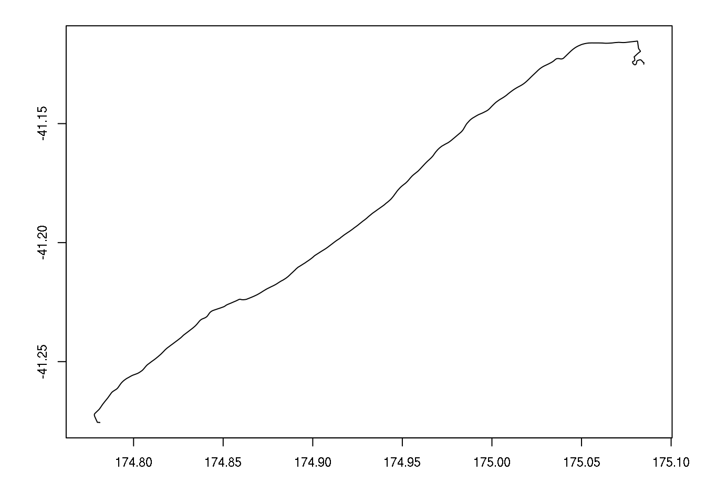

Overview
I often find myself needing to establish the travel time or distance between arrays of addresses. In the past I have used ArcMap’s Network Analyst tool, but have found the syntax to be clunky at best, and the performance to be very mediocre. And, besides, I am often working in R and sometimes it’s nice to be able to do everything in the one environment, rather than doing the routing in Python, say, and then using the results in R.
The open source routing machine is a very fast routing engine which can be accessed via an HTTP API, which means it can be queried relatviely easy from most languages, including R. And while public servers are available for use, it is also relatively easy to set up locally resulting in excellent throughput due to the lack of latency.
Prerequisites
The following R pacakges are required:
rjsonfor reading web service results in JSON formatbitopsused to decode polylines (has convenient bitshift operators, etc.)spfor spatial projections, etc.leafletfor rendering leaflet maps in a browser
Geocoding addresses
The Google Geocoding API is used to geocode addresses. Usage is free, but the free license is limited to 2500 requests per day, at a rate no faster than 5 per second. There are free alternatives, but I’ve not found any that are satisfactorally accurate for New Zealand addresses. That said, interesting alternatives worth keeping an eye on are:
- data science toolkit - doesn’t work at all for New Zealand
- Nominatim - finds addresses but probably only okay if approximate locations are acceptable.
The following code results in two addresses being geocoded which we will use as an origin and a destination later when using a routing service.
library(rjson)
#use google maps API to geocode a start point...
geoservice <- "http://maps.googleapis.com/maps/api/geocode"
(address <- paste0(geoservice, "/json?sensor=false&",
"address=10+Aragon+Grove,+Kingsley+Heights,+Upper+Hutt"))[1] "http://maps.googleapis.com/maps/api/geocode/json?sensor=false&address=10+Aragon+Grove,+Kingsley+Heights,+Upper+Hutt"origin <- fromJSON(file=address)
#...and an end point
(address <- paste0(geoservice, "/json?sensor=false&",
"address=1+Pipitea+Street,+Wellington"))[1] "http://maps.googleapis.com/maps/api/geocode/json?sensor=false&address=1+Pipitea+Street,+Wellington"destination <- fromJSON(file=address)The fromJSON function turns a JSON object to an R list. If geocoding is successful (and we will just assume it was) then the origin and destination objects will contain a number of elements. We’re particularly interested in latitude, longitude, and the formatted address. E.g.
origin$results[[1]]$geometry$location$lat[1] -41.12501origin$results[[1]]$geometry$location$lng[1] 175.0845origin$results[[1]]$formatted_address[1] "10 Aragon Grove, Kingsley Heights, Upper Hutt 5018, New Zealand"Open Source Routing Machine (OSRM)
Open Source Routing Machine is an open source route solver. It is written in C++ and runs on Linux (maybe other platforms, but stick with Linux), and is very fast. There is a nice web demo which uses the service as a back-end here. The back-end service is available to the public at https://router.project-osrm.org. Details, including usage policy, is available here.
The code below shows how to find a route between the origin and destination locations found above:
o <- origin$results[[1]]$geometry$location
d <- destination$results[[1]]$geometry$location
(url <- paste0("http://router.project-osrm.org/route/v1/driving/",
o$lng,",",o$lat,";",d$lng,",",d$lat,"?overview=full"))[1] "http://router.project-osrm.org/route/v1/driving/175.0845498,-41.1250097;174.7811653,-41.2756572?overview=full"system.time({
route <- fromJSON(file=url)
}) user system elapsed
0.000 0.004 1.240 Again, assuming a route was successfully found, route will now contain a list including, among other things, time in seconds to traverse the route, distance in metres, and the route geomertry stored in encoded polyline algorithm format.
route$routes[[1]]$duration[1] 1755.3route$routes[[1]]$distance[1] 34283.6route$routes[[1]]$geometry[1] "hf_zFufsk`@M?O@QEqAKA\\GVKTKTORQTqB|BKNIRINK`@CXCV@\\@x@p@hEL`@NZPVXLVJl@DdB\\^PVLRRRZFRH`@BZC`@GZIX}@|AY^]TWJm@Li@DeBgFUSYCi@F_Dh@MB]RKJWc@MUmAmB{C_Fm@v@OFaHlAaNxA[eG_BLw@JYNUFBf@NdCFhCFhAP~EJ~CLnCDt@DjAHrBJtBBfAB~@@hA@bBAxACvAIbFAfA?`AD`A@t@HdEHjCNvCFhBD`BDzCBnA?XBlA@z@?hA@zAC|BOrGCxGAjD?|E?pAAdLB~DDfDN~CPvCPtBRlBZbC\\~BBRlBfI\\hAV~@L^l@hBt@lBjAhCr@vAn@jA`AdBdAbB`BfC|BlDpCdEdBnCz@nA^t@Rp@Hb@Hh@Dj@Bt@?r@I~@IbAIlAErABjAJrANt@d@jAVh@Zj@`AbBjAdChAbDz@|Cv@jCtD|NZ`ANd@\\dA~@~B`@`An@vAhAlB`AbB|A|BxDdG~CbFfCxD~BfDdBjCjBxCdAfBdArB~@hB~@`CZv@p@jBb@vA\\hAz@tC|@tCr@pBh@zAx@xBv@jBfAdCpAnCdAvBv@|Ap@rAbB|Cr@vAp@|Ad@hAhAzCt@tBfA`Dj@zAd@dAr@dB|@nBhA|Bp@hA~@zAfBlC`ClDhB~Bt@fAl@|@f@`Ad@x@Zv@Vl@b@pAXdAX`Af@fBb@~Al@|Bj@lCt@jDb@hB`A~Cx@hChBfF^jAb@fAh@nAp@rAt@pA^n@~@lAhAvAhCbDtAnApFzDjDdC~BbC~A|BtCjFbD~FpEhIx@~AzAlCrApCv@bBbAdC|B~HfD`KhBnDb@|@rCjEbE`FjCdCbDtCzCtDnDtFzBxDfD~E~B~ChExF|EnGbCpDpCpF~BrEtBrDdDhEvCfDrClDfCzDvC~FrB~DtBfDxEdGfBlBnBhB`C~BdC|B~ClDtBfCfCfE|ArCtBdEbBtCv@|ApBnE|AnDlDfIxDvIrA~C`ApBfB`DnBtDt@pAtA|Bf@z@FLFNb@z@lA~Bj@rAv@fBx@|ApAdCp@rAzBfEvBpEvB|EpCxFhBdEdAfCnC`HxBhFz@lBhAzBlAhCjAnBh@pAf@rAzAvD~@xBbAxBbBjDnCzFnDnHn@tATj@nArC|@dCn@dBN^Z|@n@hBnAfDnDjJpAjD`@bA^t@vBnDp@rAt@zA|AdDbA~Bz@xBr@dBfAbCd@pAlCjHvBzFv@~Bj@pAr@nAfAlBr@fA`ApAjAnB~BnDv@vAbCpDxA~Bn@dAdAxBp@rARf@^|@j@~Aj@vAf@zAZfATv@ZfA\\|@f@xA^z@\\`A`A`Cn@fB^dAX|@ZfAz@xChApEjB|Gt@pCx@lCfCjHt@nBb@fAl@~AfA`Dl@hBbA`DxBvIvApG|ApHfAnFTpBJnBFfC?bB?`@Ch@El@OhAEf@ARA^?\\B\\Hd@Jd@pBtHxAzGvAjG~AxHbA`EvAbDz@nCvA`IvBxMtAlI\\dBV~@^fAl@tAp@fAt@~@|@x@nCbCf@f@`@h@r@pAb@fAd@~A~@lE\\~A\\fAf@hAh@`A~@rA`GvGlCrDlCtExG~M~IfR|ExHbElIfFxKrBjElBjE`AnBpArCx@bBjAtBjAnBlBhCfBdC~@rAr@bAp@fAj@~@x@zAn@hAn@fAbAnB`AfB`BfDtA~C~BhF|CrGt@`Bn@fAf@t@`@h@j@p@f@j@x@`Aj@l@tAbBfBbCvB~ExA`Er@jCdAzFfAbG~@jDlChI\\lAj@hBp@|Ax@hBlAbCpArBvAnBhAnAx@x@lAdAbA|@jAfAp@n@`@b@b@n@`@p@^r@b@hAb@lAr@jB`@dAd@dAl@hAx@dA~@~@lG|FpAnAhI`Jt@x@~CbDxJvIlAxA`@p@dGhJh@p@TPZLVFV@ZCp@Ox@ULGhAm@j@YvAs@nAo@BCj@YXMRKTMjAm@HcGAKL@"We write a function to convert the encoded route to a SpatialLines object:
decode <- function(str, multiplier=1e5){
if (!require(bitops)) stop("Package: bitops required.")
if (!require(sp)) stop("Package: sp required.")
truck <- 0
trucks <- c()
carriage_q <- 0
for (i in 0:(nchar(str)-1)){
ch <- substr(str, (i+1), (i+1))
x <- as.numeric(charToRaw(ch)) - 63
x5 <- bitShiftR(bitShiftL(x, 32-5), 32-5)
truck <- bitOr(truck, bitShiftL(x5, carriage_q))
carriage_q <- carriage_q + 5
islast <- bitAnd(x, 32) == 0
if (islast){
negative <- bitAnd(truck, 1) == 1
if (negative) truck <- -bitShiftR(-bitFlip(truck), 1)/multiplier
else truck <- bitShiftR(truck, 1)/multiplier
trucks <- c(trucks, truck)
carriage_q <- 0
truck <- 0
}
}
lat <- trucks[c(T,F)][-1]
lng <- trucks[c(F,T)][-1]
res <- data.frame(lat=c(trucks[1],cumsum(lat)+trucks[1]),
lng=c(trucks[2],cumsum(lng)+trucks[2]))
coordinates(res) <- ~lng+lat
proj4string(res) <- CRS("+init=epsg:4326")
return(SpatialLines(list(Lines(Line(res), 1)), CRS("+init=epsg:4326")))
}par(mar=par()$mar-c(1,0,2.5,0), cex=0.8)
path <- decode(route$routes[[1]]$geometry, multiplier=1e5)
plot(path); axis(1); axis(2); box()
Using leaflet to make a nicer map
It is relatively easy to make a nice interactive map. Here we draw a simple leaflet map, and overlay the origin and destination points, as well as the route between.
#make a string to nicely label the route
s <- route$routes[[1]]$duration
kms <- round(route$routes[[1]]$distance/1000, 1)
routelabel <- paste0(s%/%60, "m ", s%%60, "s , ", kms, "kms")
#create a basic map
library(leaflet)
m <- leaflet(width="100%") %>%
addTiles() %>%
addPolylines(data=path, popup=routelabel, color = "#000000", opacity=1, weight = 3) %>%
addMarkers(lng=o$lng, lat=o$lat, popup=origin$results[[1]]$formatted_address) %>%
addMarkers(lng=d$lng, lat=d$lat, popup=destination$results[[1]]$formatted_address)mIt’s also relatively straight forward to use different base maps, and a nice demo of some other providers can be found here. For example:
require(leaflet)
leaflet(width="100%", height=600) %>%
addTiles(urlTemplate='http://{s}.tile.stamen.com/watercolor/{z}/{x}/{y}.png') %>%
addTiles(urlTemplate='http://{s}.tile.openstreetmap.se/hydda/roads_and_labels/{z}/{x}/{y}.png') %>%
addPolylines(data=path, popup=routelabel, color = "#000000", opacity=1, weight = 3) %>%
addMarkers(lng=o$lng, lat=o$lat, popup=origin$results[[1]]$formatted_address) %>%
addMarkers(lng=d$lng, lat=d$lat, popup=destination$results[[1]]$formatted_address)
Share this post
Twitter
Google+
Facebook
Reddit
LinkedIn
StumbleUpon
Email